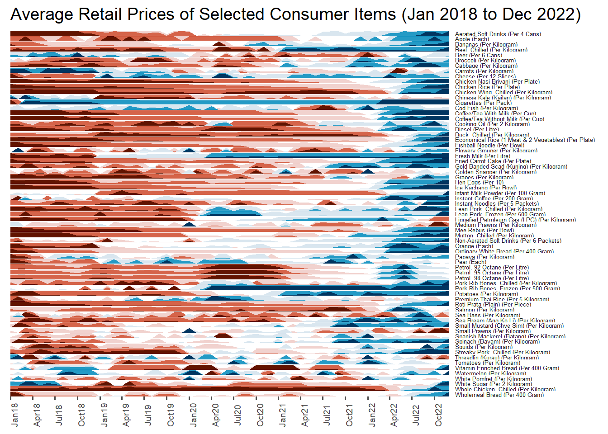

Show me the good stuff
pacman::p_load(scales, viridis, lubridate, ggthemes, gridExtra, readxl, knitr, data.table, CGPfunctions, ggHoriPlot, tidyverse)Leonard Lee
kable(head(attacks))
make_hr_wkday <- function(ts, sc, tz) { real_times <- ymd_hms(ts, tz = tz[1], quiet = TRUE) dt <- data.table(source_country = sc, wkday = weekdays(real_times), hour = hour(real_times)) return(dt) }
grouped <- attacks %>% count(wkday, hour) %>% ungroup() %>% na.omit()
ggplot(grouped, aes(hour, wkday, fill = n)) + geom_tile(color = “white”, size = 0.1) + theme_tufte(base_family = “Helvetica”) + coord_equal() + scale_fill_gradient(name = “# of attacks”, low = “sky blue”, high = “dark blue”) + labs(x = NULL, y = NULL, title = “Attacks by weekday and time of day”) + theme(axis.ticks = element_blank(), plot.title = element_text(hjust = 0.5), legend.title = element_text(size = 8), legend.text = element_text(size = 6) )
attacks_by_country <- count( attacks, source_country) %>% mutate(percent = percent(n/sum(n))) %>% arrange(desc(n))
top4 <- attacks_by_country$source_country[1:4] top4_attacks <- attacks %>% filter(source_country %in% top4) %>% count(source_country, wkday, hour) %>% ungroup() %>% mutate(source_country = factor( source_country, levels = top4)) %>% na.omit()
ggplot(top4_attacks, aes(hour, wkday, fill = n)) + geom_tile(color = “white”, size = 0.1) + theme_tufte(base_family = “Helvetica”) + coord_equal() + scale_fill_gradient(name = “# of attacks”, low = “sky blue”, high = “dark blue”) + facet_wrap(~source_country, ncol = 2) + labs(x = NULL, y = NULL, title = “Attacks on top 4 countries by weekday and time of day”) + theme(axis.ticks = element_blank(), axis.text.x = element_text(size = 7), plot.title = element_text(hjust = 0.5), legend.title = element_text(size = 8), legend.text = element_text(size = 6) )
Vietnam <- air %>% select(Vietnam, month, year) %>% filter(year >= 2010)
hline.data <- Vietnam %>% group_by(month) %>% summarise(avgvalue = mean(Vietnam))
ggplot() + geom_line(data=Vietnam, aes(x=year, y=Vietnam, group=month), colour=“black”) + geom_hline(aes(yintercept=avgvalue), data=hline.data, linetype=6, colour=“red”, size=0.5) + facet_grid(~month) + labs(axis.text.x = element_blank(), title = “Visitor arrivals from Vietnam by air, Jan 2010-Dec 2019”) + xlab(““) + ylab(”No. of Visitors”)
rice %>% mutate(Year = factor(Year)) %>% filter(Year %in% c(1961, 1980)) %>% newggslopegraph(Year, Yield, Country, Title = “Rice Yield of Top 11 Asian Counties”, SubTitle = “1961-1980”, Caption = “Prepared by: Dr. Kam Tin Seong”)
For effective data visualisation design, factor() is used convert the value type of Year field from numeric to factor.
averp %>%
filter(Date >= "2018-01-01") %>%
ggplot() +
geom_horizon(
aes(x = Date, y = Values),
origin = "midpoint",
horizonscale = 6
)+
facet_grid(Consumer_items~.) +
theme_few() +
scale_fill_hcl(palette = 'RdBu') +
scale_x_date(
expand=c(0,0),
date_breaks = "3 month",
date_labels = "%b%y"
) +
labs(
title = "Average Retail Prices of Selected Consumer Items (Jan 2018 to Dec 2022)"
) +
theme(
panel.spacing.y = unit(0, "lines"),
strip.text.y = element_text(size = 5, angle = 0, hjust = 0),
legend.position = "none",
axis.text.y = element_blank(),
axis.text.x = element_text(size = 7, angle = 90),
axis.title.y = element_blank(),
axis.title.x = element_blank(),
axis.ticks.y = element_blank(),
panel.border = element_blank())